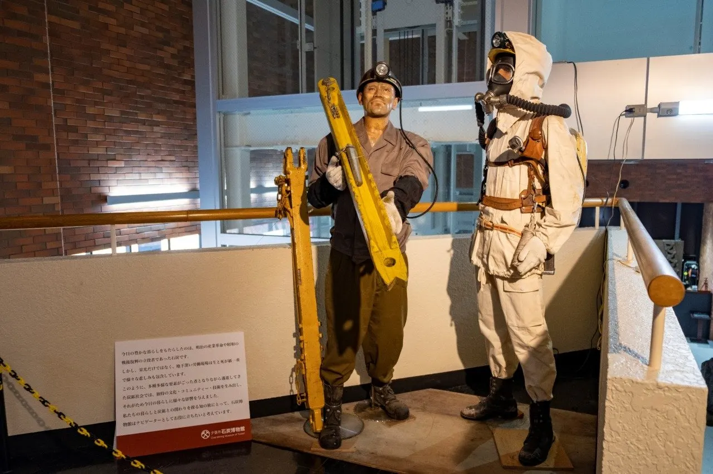
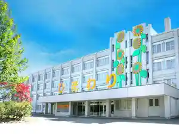
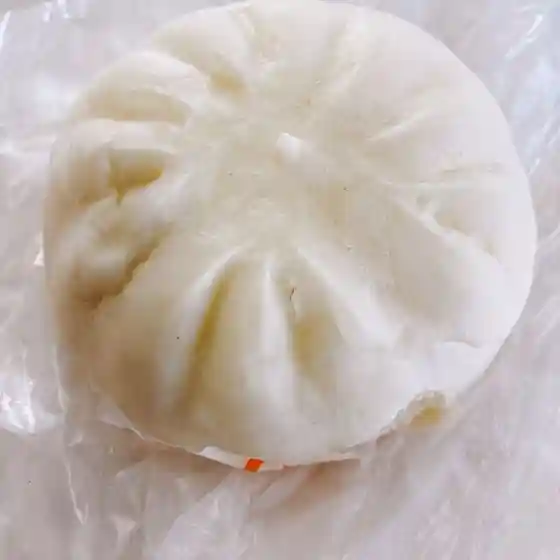
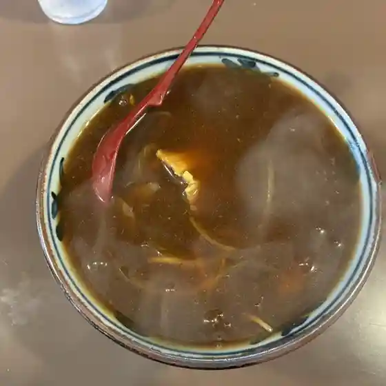
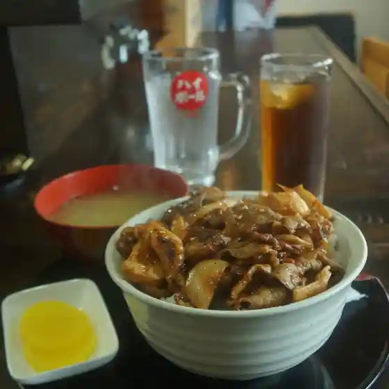
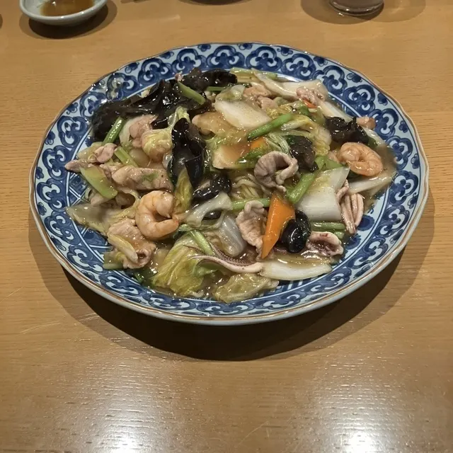
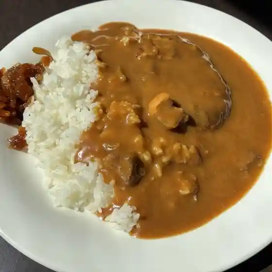
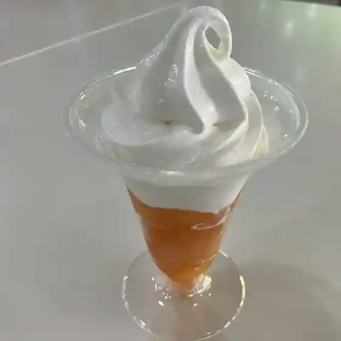
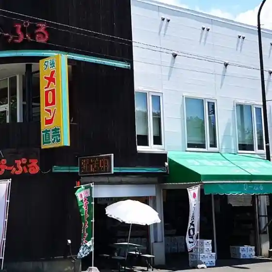

Yubari
Yubari · Hokkaido
Yubari
Highlighted on the Hokkaido map.

Stay
ホステルひまわり

Hosuteru Himawari
Dining
SNOW STYLE CAFE

Snow Style Cafe
やちぼうず

Yachibouzu
栗下食堂

Kuri Shita Shokudou
つるちゃん

Tsuruchan
酒道楽

Shudou Raku
軽食＆喫茶 コンパ

Keishoku & Kissa Konpa
夕張農協銘産センター直売所

Yuubari Noukyou Mei San Sentaa Chokubai Tokoro
ぴーぷる

Piipuru
志むら菓子舗
Kokorozashi Mura Kashi Ho
酒房いまだ
Sake Bou Imada
米久
Kome Kyuu
夕張サワダ珈琲店
Yuubari Sawada Koohii Mise
居酒屋いわい
Izakaya Iwai
夕張フォレストユースホステル
Yuubari Foresutoyuusuhosuteru
庄鮨
Shou Sushi
あかま
Akama
吉野家
Yoshinoya
ベーカリーショップめぐみ
Beekariishoppu Megumi
味処 阿吽
Ajidokoro Aun
夕張メロンドーム
Yuubari Merondoomu
めろんのテラス
Meronno Terasu
道の駅 夕張メロード
Michi No Eki Yuubari Meroodo
BENJAMIN COOKIES
Benjamin Cookies
Sights
Yubari Sekitan Museum
Yubari Sekitan Museum